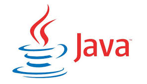
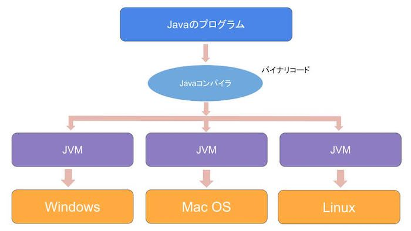
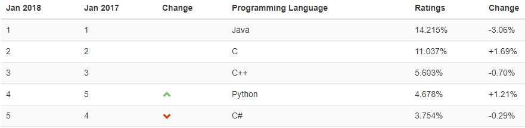
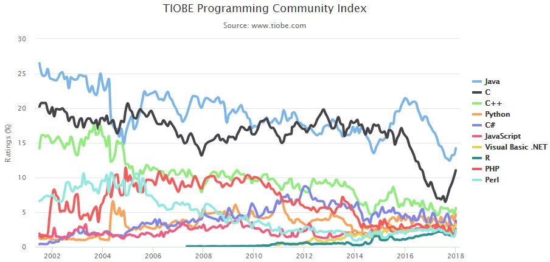

HOME
Javaとは？
Javaは、アプリ開発など幅広い開発に使用されている人気のプログラミング言語です。

Googleが主に開発に用いている「Google三大言語(Java、C++、Python)」のひとつでもあり、応用力のある言語として昔から根強い人気を誇っています。
また、大企業での大規模システム開発やAndroidアプリの開発などを得意としています。
ちなみに、よく間違われるのですが語呂が似ているJavaScriptとは全く別の技術です。
Javaの実行環境
Javaの最大の特徴は「JVM（Java Virtual Machine：Java仮想マシン）」というもので動いていることです。
Java仮想マシンはその名前の通り、Javaの為に擬似的に作り出されたマシンです。

例えるなら、Java仮想マシンは「コンピュータ本体との通訳者のようなもの」で、
Java仮想マシンさえ動作すればJavaはどんなコンピュータ上でも利用することが出来ます。
Javaで開発することで、たとえOSを入れ替えてもプログラムはそのまま使用することが出来るのです。
Javaの需要
媒体にもよりますが、2018年現在Javaは堂々のシェア1位となっています。

また、下記グラフは2002年以降の各プログラミング言語の人気度をグラフで示しています。
PythonやJavaScriptなどの登場で全体的に右肩下がりになっていますが、それでもJavaの人気は不動のものと言っていいでしょう。

2000年代に入ると、Javaがずっと1位を独占しています。
沢山の人が使っているということは人気が高いということだけでなく、技術的に安定しており（バクなどが見つかっても修正されやすい）、プログラミング学習をする際に参考にできるサイトなどが多いということも表しています。